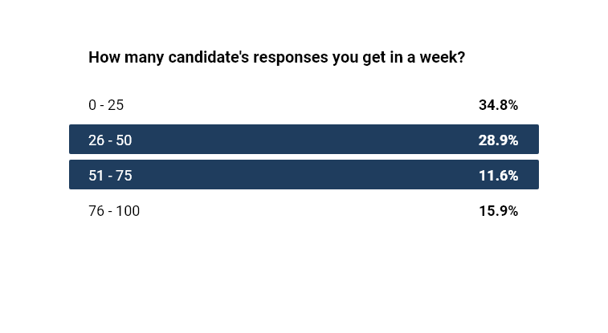
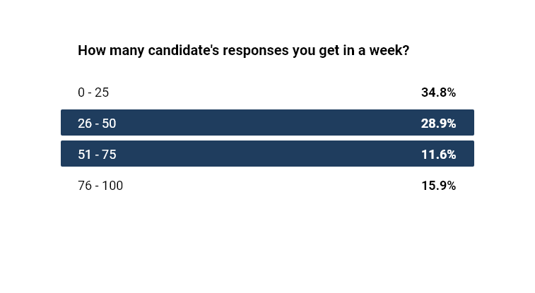

A fundamental redesign of SpeekIO's hiring experience
SpeekIO solution makes hiring process for HR managers easier, faster and more detailed, making it the ultimate hiring experience. Hiring managers can create a job advertisement and can also create initial screening exam test. This cloud based solution can be accessed and can be used from anywhere in the world. I led the ideation, strategy and design for its web based solution.
- MY ROLE
- User Research
- Journey Mapping
- Sketching
- Wireframing
- Screen Flows
- Visual Design
- Interaction Design
- PLATFORMS
- Web(Cloud based)
- YEAR
- 2019-2020
PROBLEM
Many hiring managers create an advertisement regarding vacancies on job boards or online portals and create online test forms on some other channels in which filtering out the best candidate for the job is tiresome. Hiring managers experience issues like time constraint and desired candidate selection during the screening procedure.
KEY DRIVERS
Since there are a number of onboarding processess for hiring managers onsite for candidate screening, but on certain stages, a candidate may feel nervous or simply loose interest during the process. I built my design to deliver upon the following key points:
- JOB POSTING
- A job posting portal where hiring manager is able to post job related information in a detailed manner and may also define hiring flows for his team. The step-by-step wizard will help him create comprehensive job-related details and gather candidate's profile data.
- ONLINE TEST CREATION
- A solid online test creation experience where hiring manager may design an online test for candidate screening. Test includes manual and automatic scoring by system.
- FILTERING BEST CANDIDATE
- A detailed ken-ben design of hiring flow experience, where the smart system filters out appropriate candidate. Based on system's automatic & reviewer's manual scoring in minimal span, it saves unnecessary hours of manual screening procedure.
- CONDUCT ONLINE VIDEO INTERVIEWS
- Allowing hiring managers to invite filtered candidates along with other team members for online video interviews from the same portal.
WHAT DOES THE CURRENT HIRING PROCESS LOOK LIKE?
I was looking to get a clear picture of how our primary users went about hiring a candidate through fast onboarding process. In order to get a better understanding of their usage and motivation, here are some research techniques I applied for the redesign.
METHOD 1:
QUALITATIVE & QUANTITATIVE DATA
With the help of performing in-person interviews and conducting surveys, I learnt existing user behaviors for candidate hiring. Findings included understanding of onboarding process, existing hiring portals and user preferences for candidate shortlisting. Some of the insights are shown below.
METHOD 2:
HR MANAGERS REVIEWS ON DIFFERENT PORTALS
I have gone through hundreds of reviews and comments left by hiring managers on different portals, further categorized and highlighted them in terms of importance. This critical analysis of feedback helped me identify various pain points and improvement areas.
“Online onboarding process insight report higher levels of influence and are dependent on the comfort level of candidates and hiring managers”
Hiring managers were always finding discomfort with the candidates when they engage them through onsite onboarding process. Due to awkwardness, these candidates left the interview in between or felt low in confidence while going through it. In many Scandinavian countries, candidate prefers going through online onboarding process.
“Creating online exam test and filtering best candidate through ranking system topped the list of hiring process”
A sample of the different set of questions asked from the participants is shared. Items with the highest opportunity are highlighted in blue.

 

JOURNEY MAPPING
Based upon the data gathered from in-person interviews, surveys and reviews, I structured my observations and categorized them using a customer journey map. This helped me identify pain points and areas for improvement throughout the journey. It also helped me initialize discussions to understand knowledge gaps and idea generation between team and stakeholders.

CONSIDERING USER NEEDS WITH BUSINESS GOALS
The initial user research uncovered various areas of opportunity, such as creating test and evaluating candidates automatically. However, as the nature of this project was MVP, I kept in mind the buisness goals and resource capacity and decided to work on some key areas, including optimizing user experience around job posting, creating test in quick way, creating hiring flows for the team, reviewing candidates and inviting candidates for video interviews, and thereby, meeting user and business goals including easy hiring and onbaording process, with a strong focus on shortlisting a right candidate to cut down the manual shortlisting process. The previous system also missed the flows and management of the data strategy. The redesign was to reduce these shortcomings.
BRAINSTORMING
PROTOTYPING

ORGANIZING
ORGANIZING THE STRUCTURE
I optimized the concept with research results aligned with our business goals and went through some rounds of quick iterations using sketches. I also refined the information architecture that focused on job creation, designing test, creating hiring flows and evaluation strategy.
IDEAS TO FLOWS
I sketched many ideas and brainstormed various ways with my team and created low-fidelity wireframes and prototypes to test. The outcome was job creation, test creation, scoring candidate, reviewing candidate flows along with other flows like profile creation, team management etc.
ICONOGRAPHY
I also designed all the icons from scratch in svg formats for the SpeekIO system which represents the actual action used in menu drawer and other places.
MARKUP WRITING FOR PRODUCTION
I have written markup design for the SpeekIO portal with defined components and blocks using Sass compiled preprocessor and component-led design patterns with Nunjucks. The markup writing process was shared with developers and tester on GIT setup so they can start development of backend system with these markup pages.